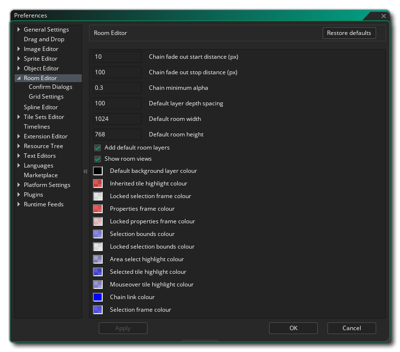
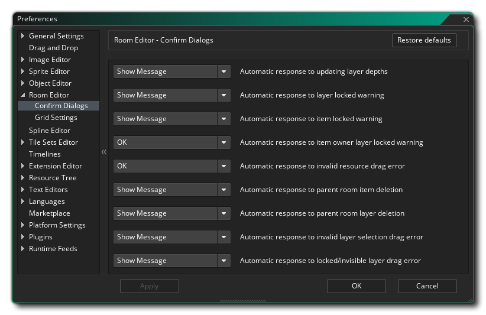

Les préférences de l'éditeur de salles servent à définir l'apparence et le comportement de l' éditeur de salle. Les paramètres généraux sont les suivants:
- Distance de début de fondu enchaîné (px): Définit la distance entre la fenêtre parente pour le lien en chaîne et le fondu sortant. La valeur par défaut est 10px.
- Distance d'arrêt de fondu enchaîné (px): Définit la distance entre la fenêtre parente pour le maillon de chaîne et la fin de l'évanouissement. La valeur par défaut est 100px.
- Chain Minimum Alpha: Définit la valeur alpha finale après le point d'atténuation de fondu pour l'alpha de la chaîne. La valeur par défaut est 0.3.
- Espacement de profondeur de calque par défaut: lorsque vous créez plusieurs calques dans l'éditeur de pièce, une profondeur est automatiquement attribuée en fonction de leur position dans la liste des calques. Cette profondeur est incrémentée de la quantité donnée ici. La valeur par défaut est 100, donc chaque couche aura la couche précédente + 100 en profondeur.
- Largeur de pièce par défaut: définit la largeur initiale qui sera sélectionnée par défaut pour une nouvelle pièce. La valeur par défaut est 1024px.
- Hauteur de pièce par défaut: définit la hauteur initiale qui sera sélectionnée par défaut pour une nouvelle pièce. La valeur par défaut est 768px.
- Ajouter des couches de pièces par défaut - Lorsque vous créez une nouvelle ressource de pièce, GameMaker Studio 2 génère pour vous deux couches "de base": une couche d'arrière-plan et une couche d'instance. Vous pouvez désactiver ce comportement afin que les nouvelles pièces ne contiennent pas de couches prédéfinies. Ceci est activé par défaut.
- Afficher les vues de la pièce: Si vous avez des vues actives dans une pièce, ceci est indiqué par un contour où les limites de la vue sont dans la pièce et la visibilité de cette zone peut être basculée à l'aide du bouton dédié de l'éditeur. Cependant, vous pouvez choisir d'avoir des limites de vue invisibles lorsque vous ouvrez une pièce en décochant cette option (le bouton peut toujours être utilisé pour les afficher à nouveau). La valeur par défaut est activée, ce qui rend les limites de vue visibles lorsque vous ouvrez une pièce.
Le reste des options générales sont liées aux différentes couleurs utilisées dans l'interface de l'éditeur de salle, et si vous double-cliquez sur l'un des échantillons, vous pouvez modifier la couleur de ce paramètre.
D'autres options sont disponibles pour l'édition à partir des sous-catégories énumérées ci-dessous:
Les préférences Confirm Dialogues sont utilisées pour modifier les messages affichés dans l'éditeur de pièce lorsque vous effectuez certaines actions. Les messages que vous pouvez modifier sont:
- Réponse automatique à la mise à jour des profondeurs de calque - Lorsque vous modifiez les profondeurs de calque, un message s'affiche pour vous avertir que cette opération mettra automatiquement à jour toutes les autres profondeurs de calque. Avec cette option, vous pouvez choisir d'afficher le message, de le mettre à jour comme si vous aviez cliqué sur "OK" ou de ne rien mettre à jour comme si vous aviez cliqué sur "Non".
- Réponse automatique à l'avertissement de verrouillage de couche - Si vous essayez de supprimer un calque dans la pièce et qu'il se trouve verrouillé, un message s'affiche par défaut. Cependant, régler cette option sur "OK" n'affichera pas le message et ne vous laissera pas supprimer le calque.
- Réponse automatique à l'élément verrouillé avertissement - Si vous essayez de supprimer un élément, il se trouve être verrouillé, vous serez montré un message par défaut. Cependant, régler cette option sur "OK" n'affichera pas le message et ne vous laissera pas supprimer l'élément.
- Réponse automatique à l'avertissement de verrouillage du propriétaire de l'élément - Si vous essayez de supprimer un élément sur un calque et que le calque est verrouillé (même si l'élément ne l'est pas), un message s'affiche par défaut pour vous informer qu'il peut ne soit pas fait. Cependant, régler cette option sur "OK" n'affichera pas le message et ne vous laissera pas supprimer l'élément.
- Réponse automatique à une erreur de glissement de ressource non valide - Si vous tentez d'ajouter une ressource à une couche non désignée pour ce type de ressource (comme l'ajout d'une image-objet à une couche de chemin), un message s'affiche par défaut pour informer vous que cela ne peut pas être fait. Toutefois, le fait de définir cette option sur "Ok" n'affichera pas le message et ne vous laissera pas ajouter la ressource.
- Réponse automatique à la suppression d'une pièce parentale - Ici vous pouvez choisir ce qui se passe lorsque vous supprimez un élément qui fait partie d'une pièce parent (et donc présente dans toutes les pièces enfants). La valeur par défaut est de vous montrer un message d'avertissement et de vous décider quoi faire, mais vous pouvez le définir sur "Supprimer tout" pour supprimer le message et aller de l'avant avec l'élément supprimer de la salle parent et tous ses enfants, ou vous pouvez sélectionnez "Conserver tout" pour supprimer le message annuler la suppression.
- Réponse automatique à la suppression de la couche parentale - Vous pouvez choisir ici ce qui se passe lorsque vous supprimez une couche qui fait partie d'une pièce parent (et donc présente dans toutes les salles enfants). La valeur par défaut est de vous montrer un message d'avertissement et de vous laisser décider quoi faire, mais vous pouvez le définir sur "Supprimer tout" pour supprimer le message et aller de l'avant avec la couche supprimer de la salle parents et tous ses enfants. sélectionnez "Conserver tout" pour supprimer le message annuler la suppression.
- Réponse automatique à une erreur de sélection de couche non valide - Vous pouvez choisir ici ce qui se passe lorsque vous faites glisser une ressource dans l'éditeur de pièce lorsque vous avez sélectionné plusieurs couches dans l'éditeur de couches (ou que vous n'avez sélectionné aucune couche). La valeur par défaut est d'afficher un message d'avertissement mais vous pouvez définir cette option sur "OK" pour supprimer le message et continuer, sans ajouter de ressources.
- Réponse automatique à une erreur de glissement de couche verrouillée ou invisible - Vous pouvez choisir ici ce qui se passe lorsque vous faites glisser une ressource sur une couche verrouillée ou marquée comme invisible. La valeur par défaut est d'afficher un message d'avertissement mais vous pouvez définir cette option sur "OK" pour supprimer le message et continuer, sans ajouter de ressources.
Les préférences Paramètres de la grille sont utilisées pour modifier le mode de recouvrement de la grille, avec les options suivantes disponibles:
- Espacement horizontal de la grille (px) - Ceci définira l'espace horizontal pour les cellules de la grille de la pièce en pixels. La valeur par défaut est 32px.
- Espacement vertical de la grille (px) - Ceci définira l'espace vertical pour les cellules de la grille de la pièce en pixels. La valeur par défaut est 32px.
- Afficher la grille - Cette option permet d'activer ou de désactiver la grille de la pièce lorsque vous ouvrez une pièce pour la première fois. Il est activé par défaut, mais même s'il est désactivé, vous pouvez l'activer à nouveau en utilisant le bouton approprié dans l'éditeur de salle lui-même.
- Aligner sur la grille - Avec cette option, vous pouvez définir si une pièce doit avoir des actifs alignés sur la grille de la pièce par défaut ou non lorsqu'une pièce est initialement ouverte. Il est activé par défaut, mais même s'il est désactivé, vous pouvez l'activer à nouveau en utilisant le bouton approprié dans l'éditeur de salle lui-même.
- Couleur de la grille - Cette option vous permet de définir la couleur (y compris le composant alpha) des lignes de la grille de la pièce. La valeur par défaut est (rgba) #FFFFFF30.